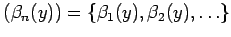
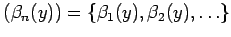
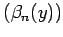

Inhalt Index DeskTop Bronstein

 Lineare Integralgleichungen Fredholmsche Integralgleichung 1. Art Begriffe, analytische Grundlagen
Lineare Integralgleichungen Fredholmsche Integralgleichung 1. Art Begriffe, analytische Grundlagen


Eine Reihe von Verfahren zur Lösung von FREDHOLMschen Integralgleichungen 1. Art
geht von einer Darstellung der Lösung  als Funktionenreihe bezüglich eines Funktionensystems  aus, d.h., es wird der Lösungsansatz
als Funktionenreihe bezüglich eines Funktionensystems  aus, d.h., es wird der Lösungsansatz
mit zunächst unbestimmten Koeffizienten cj gewählt. Bei der Wahl des Funktionensystems  ist zu beachten, daß durch diese Funktionen der gesamte Raum der Lösungen erfaßt wird und die Koeffizienten cj geeignet dargestellt werden können.
Aus Gründen der Übersichtlichkeit werden die nachfolgenden Ausführungen auf reellwertige Funktionen beschränkt. Alle Aussagen sind aber auf komplexwertige Funktionen übertragbar. Für die Begründung der darzulegenden Lösungsverfahren sind einige Forderungen an die Kernfunktion K(x,y) zu stellen (s. Lit. 11.2, 11.9). Diese Forderungen werden stets als erfüllt angesehen. Zunächst werden einige Hilfsmittel erläutert.